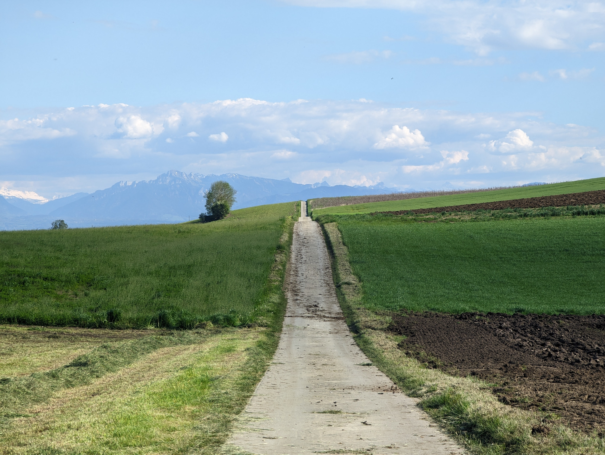
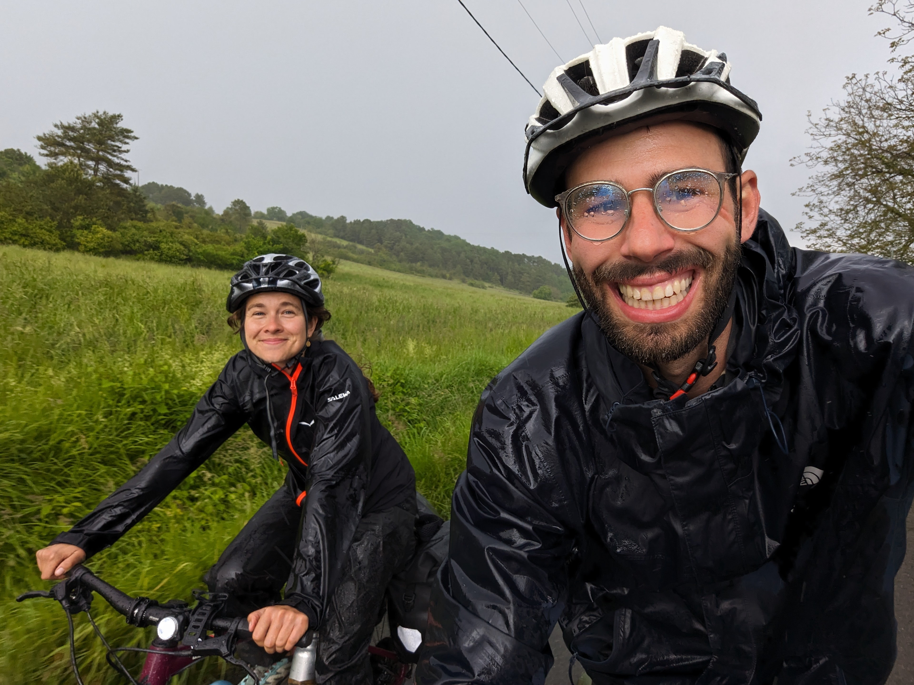
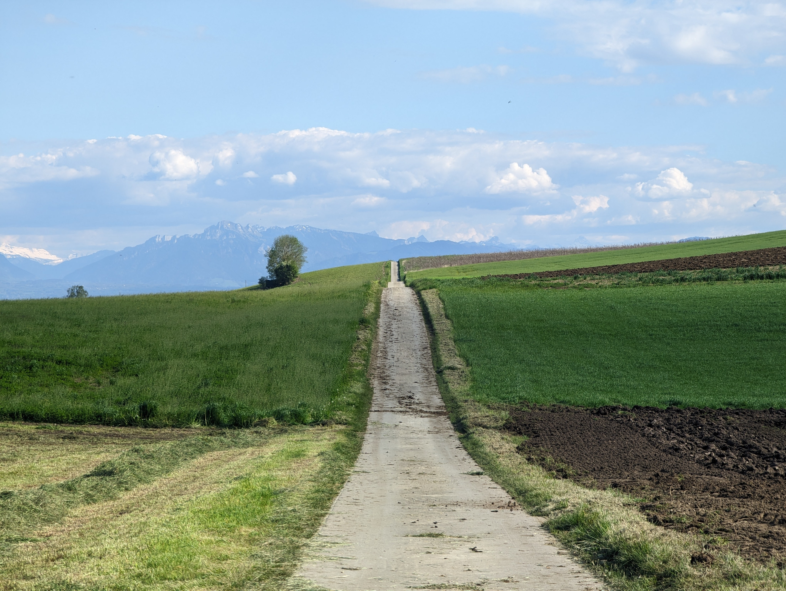
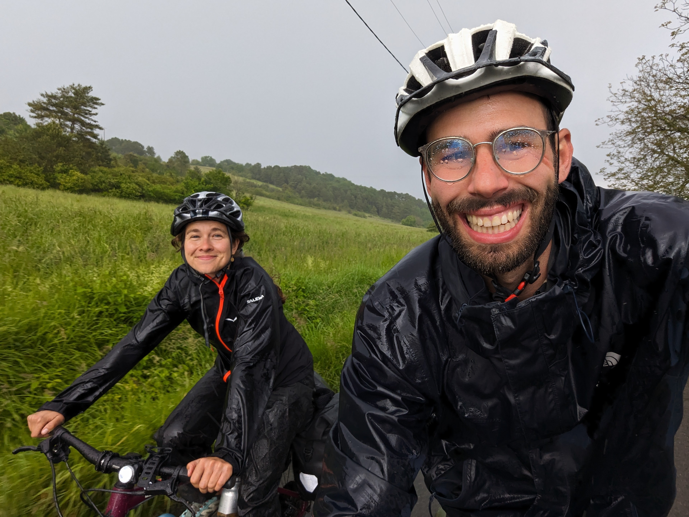

croissant cycling trip - part 1
June 19th, 2024For a few years now, I've enjoyed cycling as a hobby and bikepacking as a favorite way of traveling. This year brought a big break from work where both Carole and I were free. She had never done a bike trip before, but curious to explore the lifestyle for herself, she suggested that we travel from Switzerland to Spain and thus the trip was born.
The itinerary
Ideally we would travel from Carole's hometown to mine, but time constraints due to other commitments left us with 22 days. Therefore we decided to cover the distance between Gurmels (close to Bern) and San Sebastián, and since we wanted this to be a holiday, we planned some train time to skip over some parts of the route so that we would have time to enjoy, rest and explore nature instead of just following the most optimal path. Our route ended up like this:
Gear list
Not exhaustive, but most of the important items are listed: Not listed is all the food we picked up and carried throughout the trip, which got a bit out of hand at some points:
Camping gear
- 2 person tent: MSR Hubba Hubba NX2
- Down sleeping bag. Comfort ~0 ºC (2x)
- Therm-a-rest sleeping pad (2x)
- Camping pillow (1x)
- Head lamps
- Camping stove and pots
- Camping gas and matches
- Pocket knife
- Swiss knife
- Camping plates & sporks
- A couple plastic tupperwares
- Dish soap and sponges
- Body soap & shampoo
Clothes (Guille)
- Bib shorts
- Summer cycling jersey
- Merino cycling jersey (short sleeves)
- 2x cycling socks
- 3x boxer briefs
- Bathing suit
- Microfiber towel
- Wool socks (sleeping)
- Merino baselayer (camping/sleeping)
- Sports shorts
- Hiking/leisure technical pants
- White t-shirt
- Overshirt and casual shorts
- Salomon trail running shoes (cycling shoe)
- Sandals (Tevas)
Other gear
- 20k mAh power bank
- Power adapter
- Cables
- Film camera
- Phones
- Peak design outfront bike mount
- Mirrorless camera, batteries, SD cards
- Bike multitool
- Patch kit, tyre levers & spare tubes
- Notebooks, pens
- Toilet paper
- Baby wipes
- Sunscreen
- Body lotion
- Tampons, pads
- Hand sanitizer
- Toothbrush, toothpaste
- electrolyte tablets
- first aid kit, med kit
In the next few weeks I'll post in more detail the adventures that we went through, stay tuned.
Guille 



Message me: mail [at] guillego.com